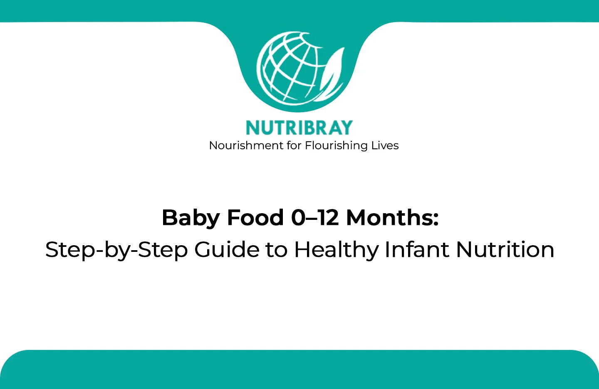
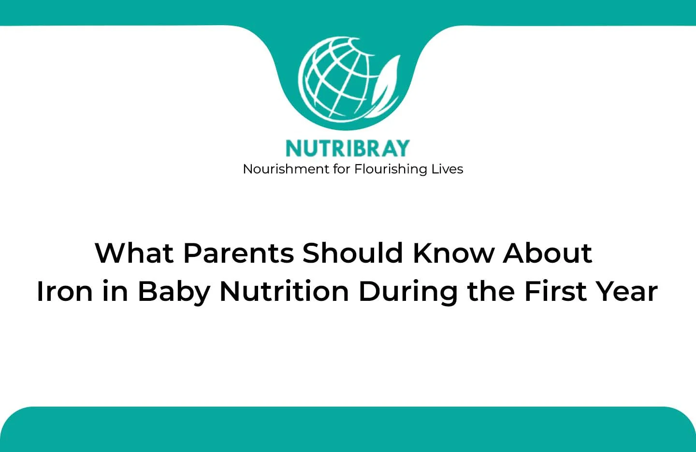
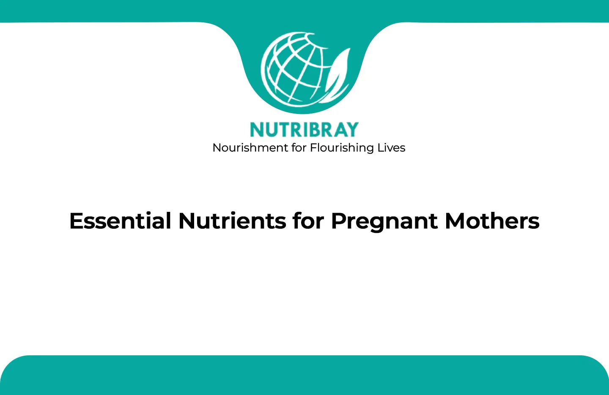
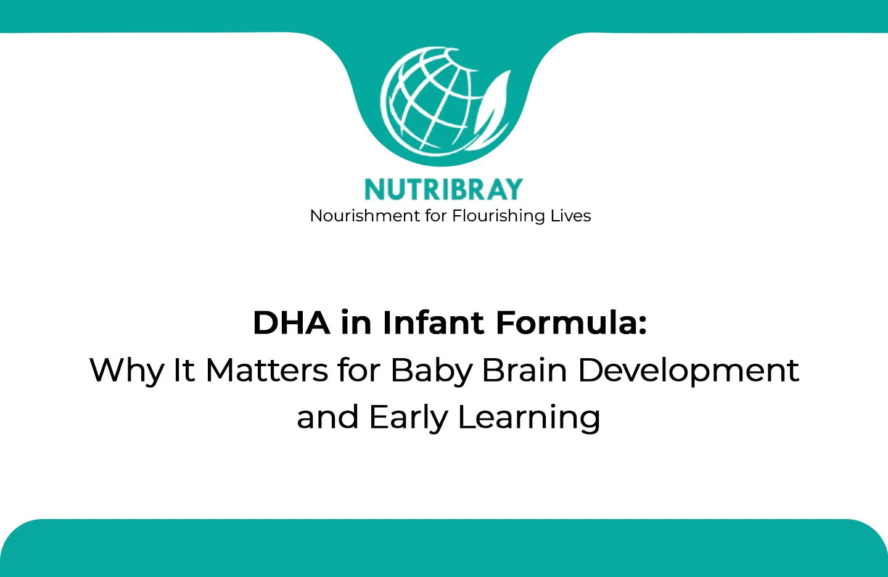
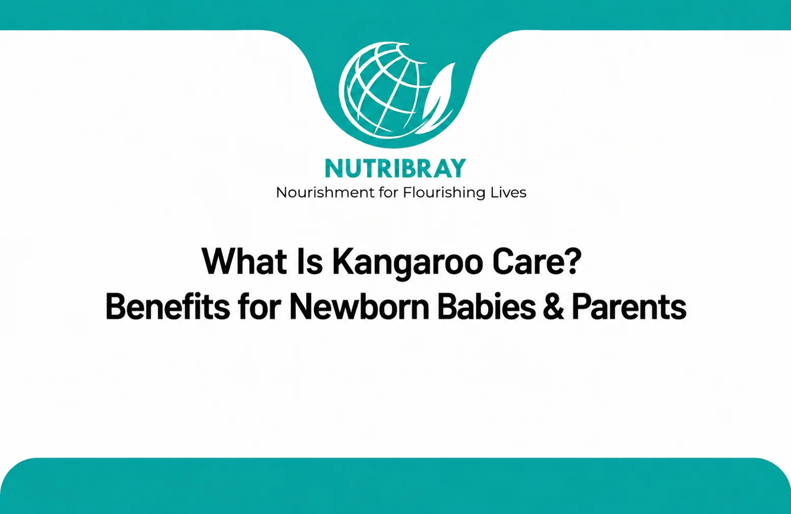
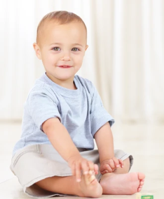

Feeding
Baby Food 0–12 Months: Step-by-Step Guide to Healthy Infant Nutrition
A practical overview of feeding milestones during the first year and how nutrition changes as babies grow.
Read article →Practical reading for parents and caregivers on infant nutrition, complementary feeding, maternal nutrition and child development—organised to help you find reliable information faster.
Try “DHA”, “0–12 months”, “pregnancy” or “feeding”.

Understand why iron matters during the first year, where it comes from and what parents should discuss with their healthcare professional.
New and useful reads for parents, caregivers and growing families.



A practical overview of feeding milestones during the first year and how nutrition changes as babies grow.
Read article →A parent-friendly guide to DHA, early development and the questions to consider when reviewing infant nutrition information.
Read article →Explore the changing nutritional needs of pregnancy and the role of balanced food choices during this important stage.
Read article →How nutritional requirements evolve after the first year as toddlers move toward varied family foods and active growth.
Read article →
An introduction to medium-chain triglycerides, why they are used in specialised nutrition and why professional guidance matters.
Read article →What parents should know about extra nutritional care for low birth weight babies and the importance of clinical supervision.
Read article →Common concerns parents notice when feeding and why symptoms should be discussed with a pediatric healthcare professional.
Read article →
A simple guide to complementary feeding, texture progression and establishing a calm feeding routine.
Read article →
Learn about skin-to-skin contact, why it is used in newborn care and how parents can discuss it with their clinical team.
Read article →
Key factors to review when comparing formula products, including age stage, labelling, nutritional information and professional advice.
Read article →Infant feeding, nutrients and newborn wellbeing.

Textures, cereals and a changing nutrition routine.
Nutrition for increasingly active little learners.
Balanced family foods and ongoing development.